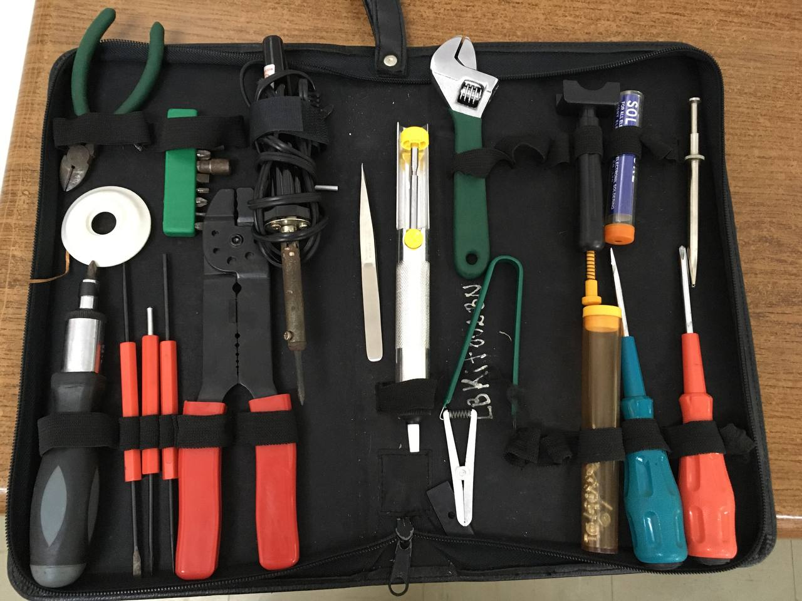
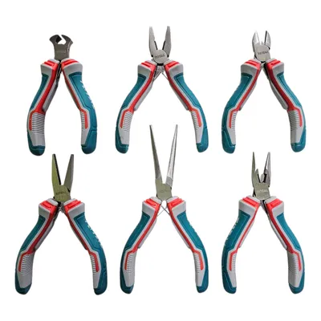
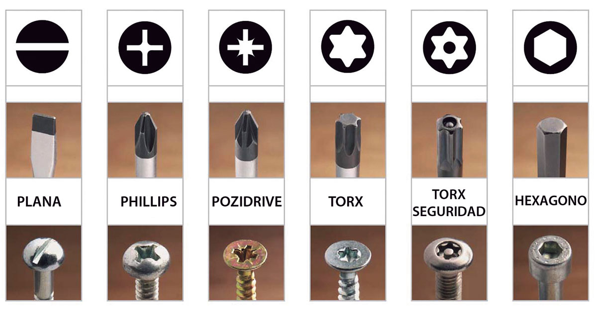
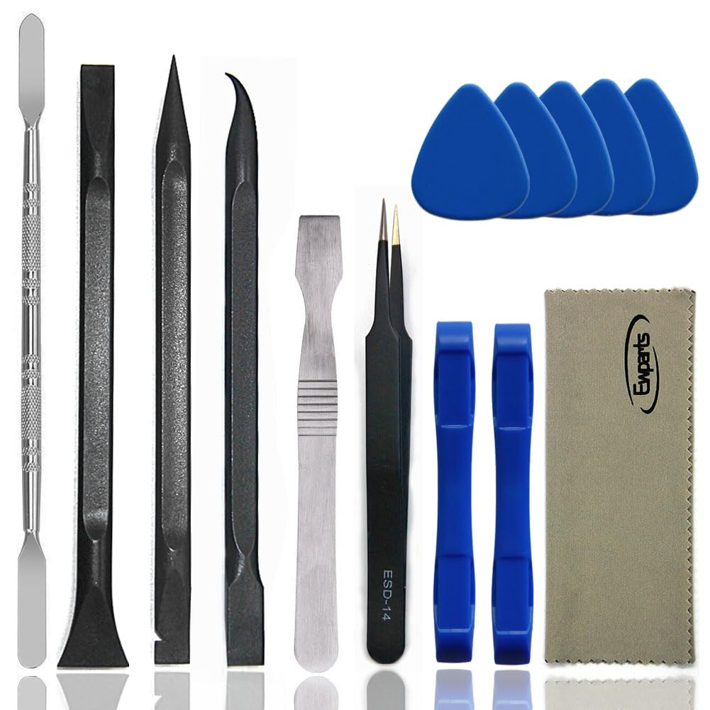
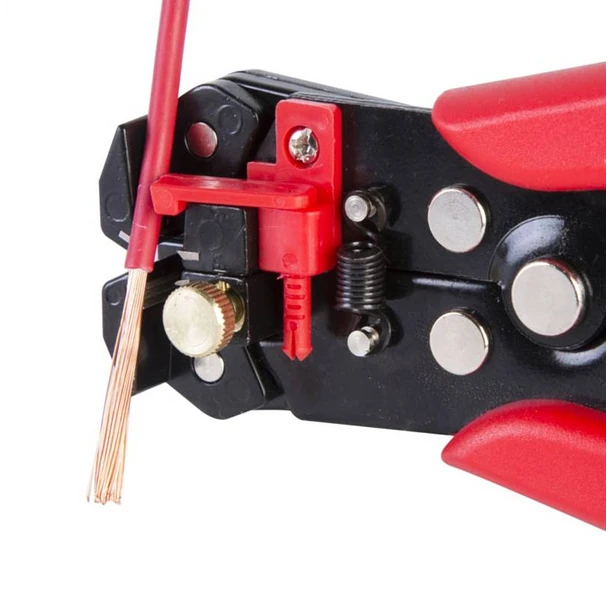
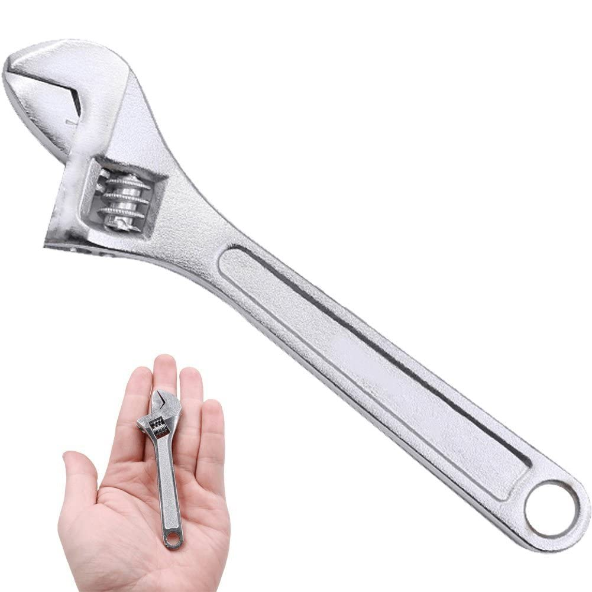
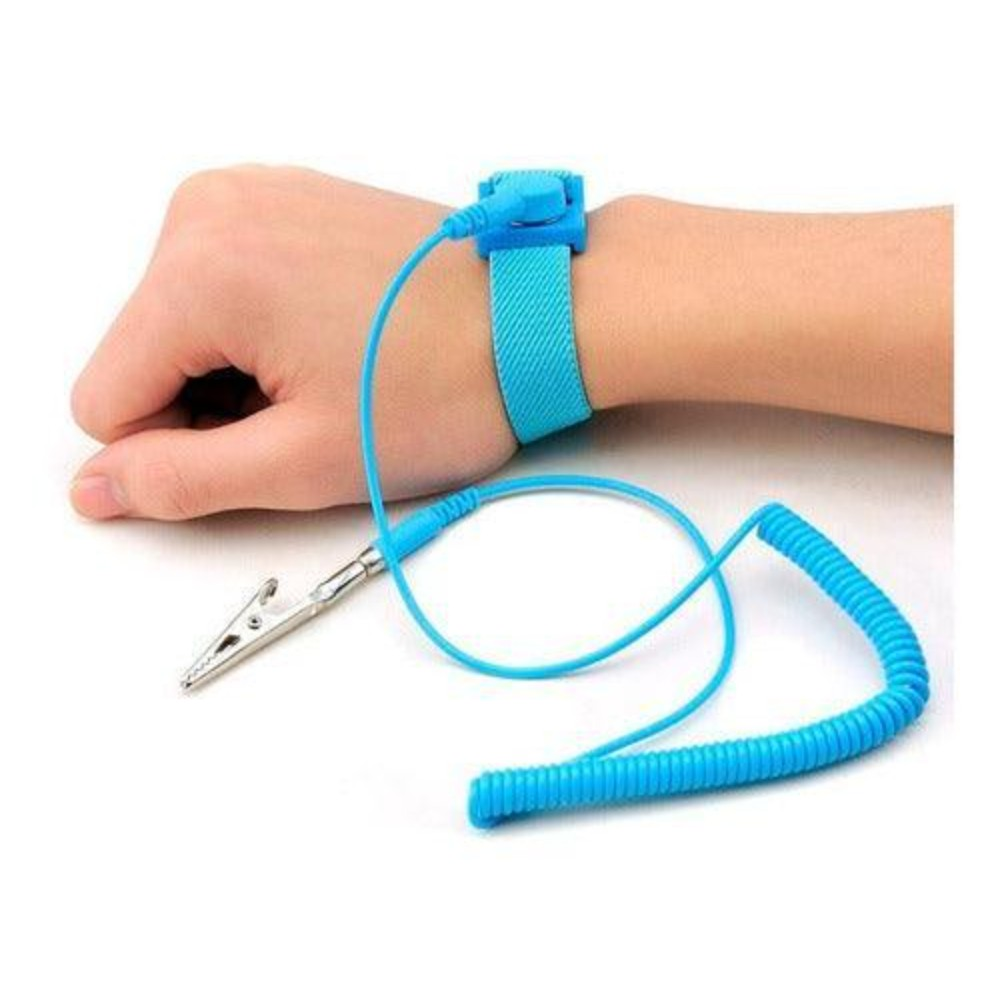

Buscador de Herramientas
Escribe el nombre de la herramienta. El buscador solo filtra por títulos.
Herramientas del Kit y Sus Usos
Este conjunto de herramientas está diseñado para tareas de electrónica, reparación de equipos, mantenimiento de computadoras y trabajo técnico en general. Permiten cortar, sujetar, medir, diagnosticar, soldar, abrir dispositivos delicados y manipular componentes con precisión. A la derecha de este texto puedes colocar imágenes de las herramientas para una referencia visual.
1. Herramientas para cortar y sujetar

Pinzas de corte (alicates de corte): Herramienta diseñada para seccionar cables finos, patas de componentes electrónicos y pequeños terminales metálicos, proporcionando un corte limpio y preciso sin deformar el material circundante.
Mini alicate de punta: Alicate de precisión con puntas delgadas, ideal para sujetar, doblar, manipular y colocar piezas pequeñas en espacios reducidos como placas electrónicas o equipos compactos.
2. Herramientas para atornillar

Destornillador de trinquete: Destornillador con mecanismo de ratchet que permite girar sin reposicionar la mano, usando puntas intercambiables para distintos tipos de tornillos. Aumenta la velocidad y comodidad en tareas repetitivas.
Puntas intercambiables: Juego de puntas modulares con diferentes perfiles: plano, Phillips, Torx, hexagonal y especiales, usadas con el destornillador de trinquete para adaptarse a cualquier tornillo.
Destornilladores de precisión: Destornilladores finos para tornillería pequeña en electrónica delicada: teléfonos, laptops, consolas, relojes y placas de circuito.
Destornilladores grandes: Herramientas más robustas para tornillos de mayor tamaño o alta resistencia, útiles en equipos eléctricos, mecánicos o estructuras.
3. Corte, apertura y manipulación fina

Cutter de precisión: Cuchilla muy afilada para cortes limpios y detallados en cables, cintas, fundas plásticas y otros materiales delicados donde se requiere precisión.
Herramientas tipo spudger: Palancas y punzones diseñados para abrir carcasas, separar conectores y manipular piezas internas sin generar daños o marcas.
Extractor DIP: Pinza especializada para extraer circuitos integrados DIP de sus zócalos sin doblar ni romper los pines.
4. Herramientas de soldadura

Soldador eléctrico: Dispositivo que calienta una punta metálica para fundir estaño y soldar componentes electrónicos en placas de circuito.
Rollo de estaño: Hilo de aleación metálica que, al fundirse, permite unir eléctricamente y físicamente componentes y pistas.
Tubo extra de estaño:Suministro adicional para garantizar continuidad en trabajos extensos de soldadura.
Bomba desoldadora: Herramienta de vacío para retirar estaño derretido, facilitando la eliminación de soldaduras y el reemplazo de componentes.
Jeringa de flux: Líquido que mejora la adherencia del estaño, reduce la oxidación y facilita soldaduras limpias y uniformes.
5. Herramientas para cables y conectores

Crimpeadora / Pelacables: Herramienta multifunción que permite pelar aislantes, cortar cables y crimpar terminales para conexiones seguras y profesionales.
Ponchadora RJ45/RJ11: Pinza diseñada para instalar conectores de red en cables Ethernet (RJ45) o telefónicos (RJ11), asegurando un contacto firme y correcto.
Cripiadora: Variante o versión combinada de la crimpeadora, utilizada para unir terminales y conectores a cables mediante presión mecánica.
6. Herramientas generales

Llave inglesa: Llave con boca regulable que se adapta a tuercas y pernos de diferentes tamaños, útil para montajes mecánicos, sujetadores y soportes metálicos.
7. Prueba y diagnóstico

Multímetro: Llave con boca regulable que se adapta a tuercas y pernos de diferentes tamaños, útil para montajes mecánicos, sujetadores y soportes metálicos.
Probador de red: Dispositivo que analiza continuidad, orden de cables y posibles fallos en cables de red. Confirma que un RJ45 está correctamente cableado.
Probador de fuente de poder: Equipo para verificar voltajes correctos en fuentes ATX (3.3V, 5V, 12V). Detecta fallas en líneas de alimentación antes de conectar una PC.
8. Equipos auxiliares

Sopladora: Herramienta de aire a presión usada para remover polvo y suciedad en computadoras, tarjetas madre, fuentes de poder y zonas difíciles de limpiar.
Pulsera antiestática: Accesorio que evita descargas electrostáticas (ESD) durante el trabajo con componentes sensibles, protegiendo circuitos y memorias.